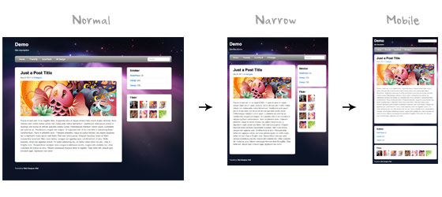

Responsive
Проблема мобильных браузеров
Размер экрана десктопа очевидно больше размера экрана мобильного
устройства.
Можно изменять масштаб десктопного сайта, подгоняя к размеру мобильного
экрана, но тогда текст будет нечитабельный.
Можно оставить текст читабельным, но использовать scroll для прокрутки
текста, что также не очень удобно.
Существует два способа создать сайт под мобильный экран.
-
создать CSS правила с ширинами блоков в % от ширины экрана
-
создать несколько CSS правил с фиксированной шириной
под разные ширины экрана с
помощью медиаправил
-
совместить первый и второй способы: задать ширину блоков в % и
использовать медиаправила для изменеия расположения и размеров блоков
Пример макета для различных устройств.
